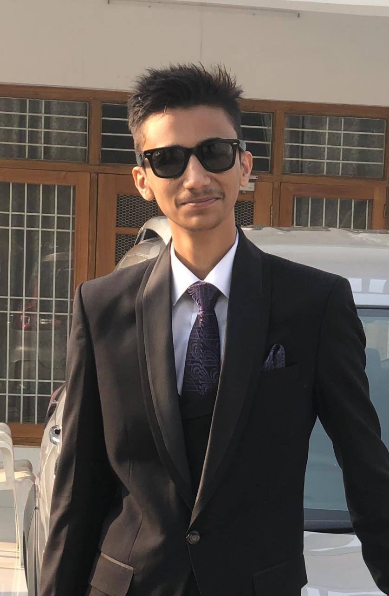
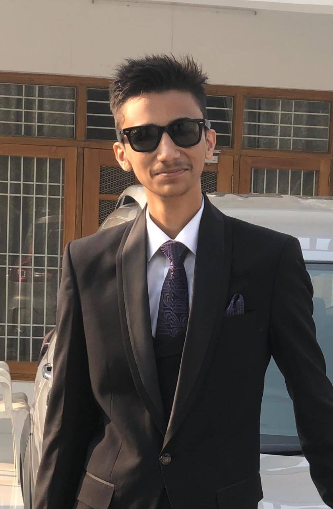

Gurmaan Singh Sandhu
I’m a 20 year old University Student, working to be a Game Developer.
I’m passionate about this field a lot, which is why I’ve taken the decision to opt it in as my Major itself. Though my interests in Programming and development stem even outside this field, which is why I’m also learning things outside of it. This website that you are currently on, is one of my own projects in an attempt to learn more.
Outside of just work, most of my days, when not with friends, are spent playing games, which unsurprisingly -- considering my major -- I quite enjoy.
My go-to stress reliever however, is a walk, preferably in a secluded quite place, outside in the greenery, with some music in my ears as I pace.

 
